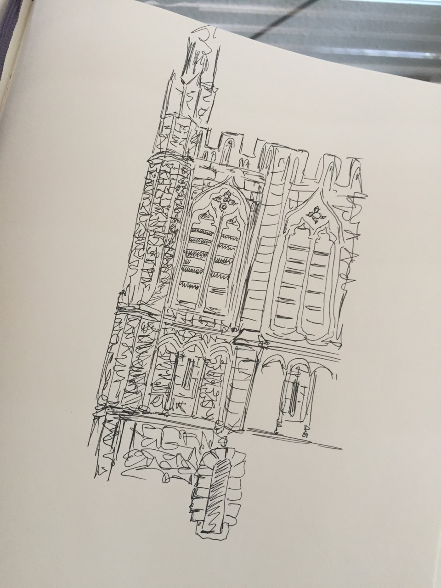
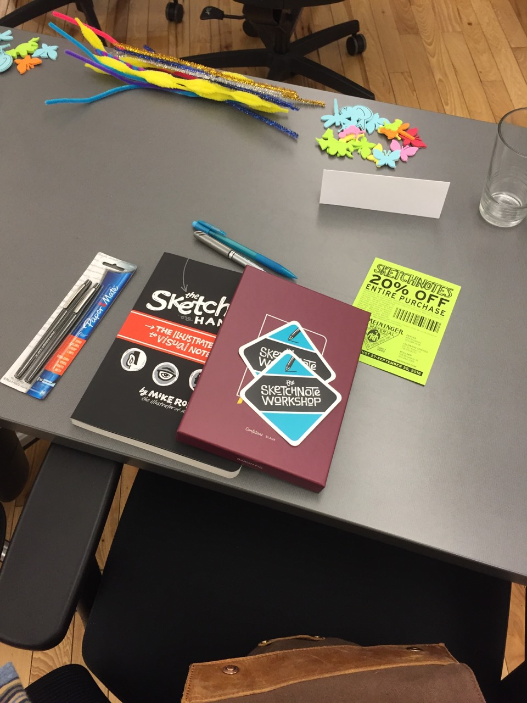
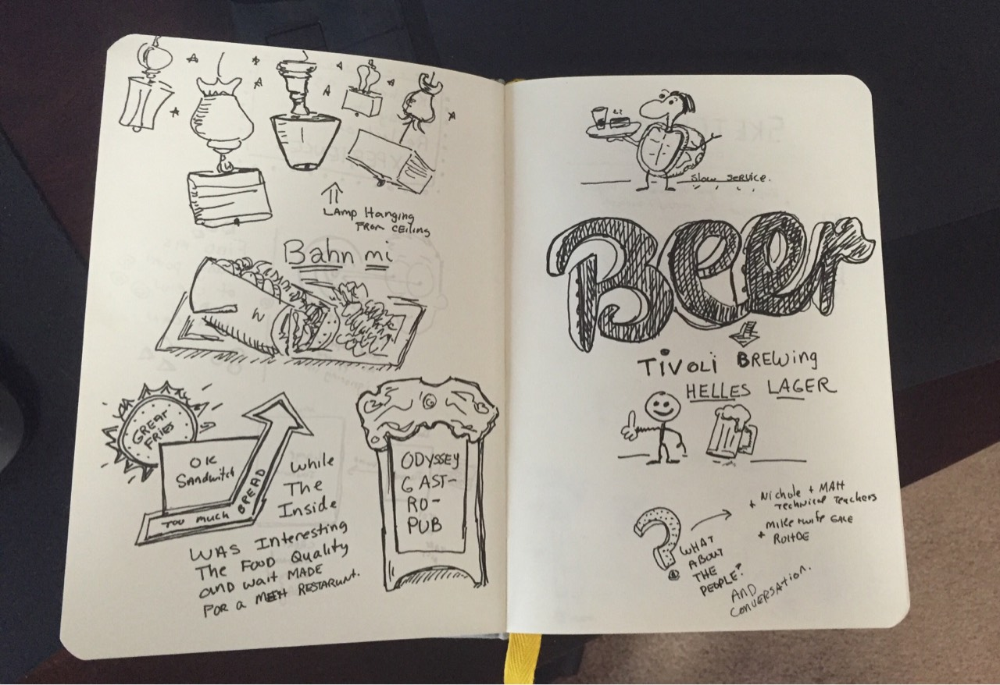
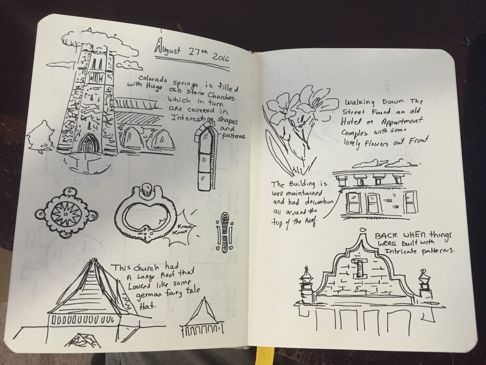

This weekend I went down to Colorado Springs to take the sketchnote workshop hosted by no other than the author of the Sketchnote Handbook, Mike Rohde ; who had driven down all the way from Michigan to host the workshop.
I had driven down the night before, so I got to the Epicentral Coworking space early and had time to walk around the area. The area is rich with large, extremely well kept, buildings that are covered in tons of ornate details. I could have spent the entire day just wandering around that 6 block area sketching all the buildings and patterns, but alas I was only thirty minutes early so I just ended up with a quick sketch of this church:

Everything about the class was above expectations, and Epicentral co-working, where the workshop was held was no exception. It is a swanky clean and modern co-working space; I could, and probably will, do an entire post on well hosted events vs. poorly hosted events, and as I think about it, I think it comes down to providing a unique experience to people; giving them something that can't get anywhere else. Given that the host of the event brought Mike down from Michigan, found an exceptional meeting place, and baked gorgeous looking (and tasting) home made muffins (I could also write an entire post on the difference in showing up to homemade muffins as opposed to super market bulk muffins.) , I'd say that they succeeded at providing a spot on unique experience well worth the money paid for the workshop.
Sitting down at the table, i was greeted to all the supplies I would need for the day:

Again, providing a great and unique experience; not leaving to chance that people bring along the correct supplies, or if they get angry because they don't have what they need or what they brought doesn't work correctly. Your job as a participant is to show up and learn; everything else should be taken care of by your host.
Mike had a great setup for teaching the class. He used his IPAD connected to an Apple TV, and by using Paper, he had the skeleton of his presentation outlined, and then he used his apple pencil to draw in the rest of the slide as the class followed along.
We spent the morning doing various exercises and learning how to use basic shapes to build up simple icons; the goal of sketchnoting is not to create picture perfect pieces of art, but to allow you to look at your notes and quickly find information and help you remember the information better. When lunch came the assignment was to create a sketchnote of your lunch, and this is where the real value of the class started to stand out.
For lunch we broke into groups, and went to different restaurant. The first lesson of sketching your lunch, and a trick to any sketchnoting, is not to do it live. Use your camera and take pictures, take notes in a notebook, and then when you have time, take your notes and pictures and create the final sketchnote. If everyone at lunch would have been busy sketchnoting everything, there would have been no conversation, and probably instead of a fun experience, it would have just been awkward. After lunch (that went really long.) we came back to the co-working space and worked on our notes for lunch:

This is where having a class with other people instead of just learning on your own really (really really really) becomes invaluable. While the lunch itself wasn't super, I was happy that we picked a restaurant that had a lot of character and things to draw, so I was proud of myself when I got a bunch of the items down in the notebook, but then one of the people I had lunch with showed me her notebook and I realized the complete failure of the note taking. Her notebook had notes about all the people she had lunch with (along with some of the other details of the restaurant) , and as I saw other peoples submission, I saw they too had written down the important points of the conversations they had, and the names of the people they had lunch with.
If I had decided to just get the book and learn on my own, I may have never had this AH-HA moment. This happened many times during the class as I did my entry, and then saw all the different ways other people had done theirs.
Another theme that came out of the class, and was noticed by many people, is that just by simply sketchnoting you end up really examining your environment instead of just breezing past everything. And even though we had a bad lunch experience, as we did our notes, we realized there was more than just the lunch; we had a healthy and amusing conversation, we had a pleasant walk outside, the restaurant was eclectic and fun. Without doing a sketchnote, all any of us would remember from the experience is that the food was slow, we ate, and then left.
At the end of the day, the main points I took away from this workshop:
And finally this quote that I have been living by lately, and the notes I made for the day:
Don't pay for things, pay for experiences
